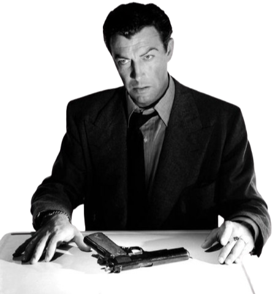
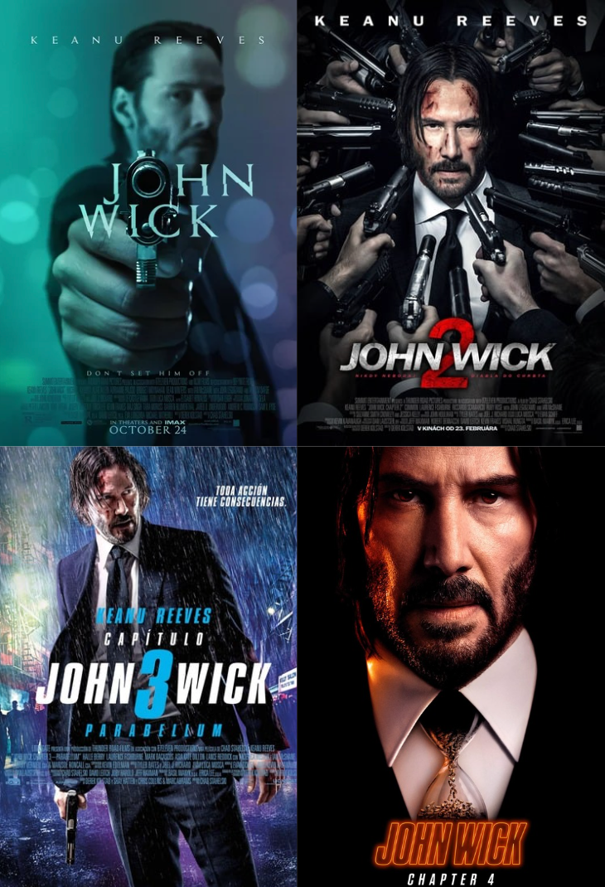
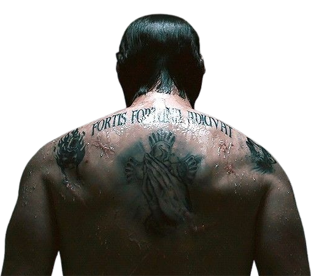

Free AI Website Maker
Acting and design may seem worlds apart — one tells stories through emotions, the other through visuals.
Yet both share a creative heartbeat: empathy, discipline, and the pursuit of meaning.
表演与设计，看似不同领域，一个以情感讲故事，一个以视觉传达理念。
但两者的核心却相似——同样需要共情、纪律，以及对意义的执着追求。

Acting began as live performance —
theatre, emotion exaggerated for the crowd.
With film’s invention, acting evolved:
subtlety replaced grand gestures, realism became beauty.
Today, acting is not just about pretending —
it’s about embodying truth.
表演艺术最初来自舞台，以夸张的动作与情绪征服观众。
随着电影的出现，演员学会了“克制”，
镜头下的细节变成了真实的美学。
如今，表演早已不只是“假装”，而是“成为”角色本身。

Keanu Reeves’ career reflects acting’s evolution —
from emotional vulnerability to silent power.
His roles, especially in John Wick, show how minimalism and restraint can speak louder than words.
He designs his performance with precision, just like a designer arranges space and color.
基努·里维斯的表演旅程，正体现了表演艺术的演变——
从情绪的宣泄到情绪的“克制”。尤其在《疾速追杀》中。
他用沉默与肢体语言表达痛苦与秩序，
就像设计师用线条与留白表达平衡与美感。

Both actors and designers start with emotion.
Actors feel before they perform;
designers feel before they design.
Empathy allows them to understand people —
whether it’s an audience or a user.
演员在“演”之前要先“感受”；
设计师在“做”之前要先“理解”。
他们都必须进入别人的世界，
用共情去发现灵魂深处的细节。
Actors rehearse endlessly for one perfect scene.
Designers refine tirelessly for one perfect form.
Both know — mastery isn’t luck. It’s built through precision, patience, and repetition.
Because perfection is never an accident.
演员为了一幕戏反复练习，
设计师为了一条线反复修改。
他们都明白——
真正的掌控，不是运气，而是精准、耐心与重复的结果。
因为“完美”，从来不是偶然。
Actors tell stories through movement, tone, and silence.
Designers tell stories through color, layout, and space.
Both craft emotion —
not just what people see, but what they feel.
演员用动作、语调与沉默讲故事；
设计师用颜色、排版与空间叙事。
他们创造的，不只是“视觉”，
而是能触动人心的“情感体验”。
Free AI Website Maker